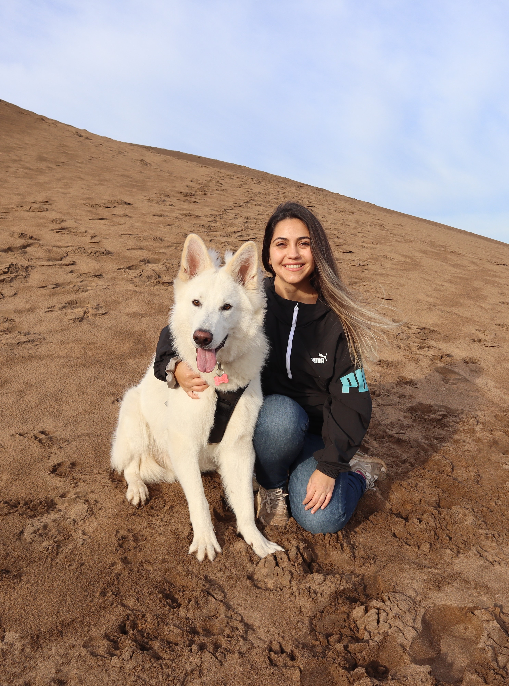

Hola!
Hola!
Soy Nacha,
UI | UX Design | Journalist | MBA Degree
¿Qué hace una periodista con MBA Degree haciendo programación?
Estoy convencida de que cualquier persona con pasión, habilidades y compromiso puede llegar a sus sueños y metas. Yo no estoy alejada de ello y es por eso que escogí ir por este camino. Graduada de User Experience Design en Google y Junior Developer del bootcamp Oracle.
Para más información, puedes acceder a mi C.V a continuación.